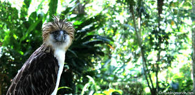

Philippine Eagle Center

The Philippine Eagle Center in Malagos, Davao City, is a 8.4-hectare conservation breeding facility for the critically endangered Philippine Eagle. It acts as a specialized zoo and research center housing dozens of eagles and other birds of prey, aiming to save the national bird from extinction through conservation breeding, education, and rescue.
Key Visitor Information
- Location: Purok 5, Malagos-Baguio District, Davao City (approximately 1 to 1.5 hours from the city center).
- Operating Hours: Daily from 8:00 AM to 4:30 PM. It typically remains open during holidays like Holy Week.
- Entrance Fees (Est. 2025/2026):
Adults: ₱150.
Youth (18 & below): ₱100.
Environmental Fee: An additional ₱5 is often collected at the gate for watershed protection.
Best Time to Visit:
Morning (around 10:00 AM) is recommended for eagle feeding times when the birds are most active.
What to See and Do
- Raptor Exhibits: Observe various birds of prey, including the Philippine Eagle, Philippine Serpent Eagle, and Mindanao Hawk-Eagle.
- Talon Alley: Learn the individual stories of rescued and rehabilitated eagles.
- Educational Tours: Guided tours are often available (sometimes led by volunteers) to provide deeper insights into conservation efforts.
- Other Wildlife: The center also houses crocodiles, monkeys, deer, and various reptiles.
- Souvenirs: Native products and eagle-themed items are available at the entrance to support the Philippine Eagle Foundation.